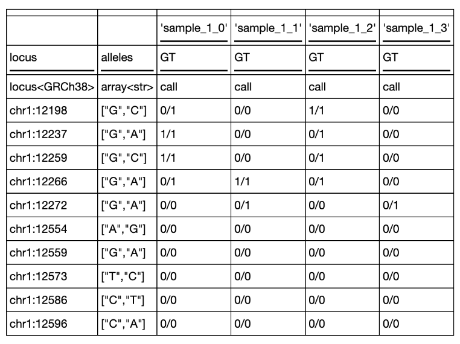

ht.describe()5 Hail on DNAnexus
5.1 Learning Objectives
After reading this chapter, you should be able to:
- Explain basic Hail terms and concepts, including Hail Tables and Hail MatrixTables
- Monitor progress using the Spark UI
- Execute Hail operations on Tables and MatrixTables, including annotating, filtering, and joining
5.2 What is Hail?
Hail is a genomics framework built on top of Spark to allow for scalable genomics queries. It uses many of the same concepts (partitions, executors, plans) but it is genomics focused.
For example, the Hail MatrixFrame can be QC’ed, and then filtered on these QC metrics.
5.3 Vocabulary
DNAnexus Specific:
- DNAX - S3 bucket for storing Apollo Databases and Tables - accessed with the
dnax://protocol - Database Object - data object on platform that represents a parquet database - has a unique identifier.
Hail Specific Terminology:
- Spark Driver - the “boss” of the Spark cluster - hosts the Spark UI
- Spark Worker - individual nodes that house executors
- Hail Executor - individual cores/CPUs within a worker - Executors are assigned tasks, identical to Spark.
- Data Partition - portion of the data that is accessed by worker in parquet columnar format
- Key - unique identifier for rows or columns
- row keys: rsid + alleles
- column keys: sample IDs
5.4 Very first thing: Connect to Hail
The first thing we’ll do is connect to Hail. In our Spark DXJupyter Instance, we’ll use the following boilerplate code:
# Running this cell will output a red-colored message- this is expected.
# The 'Welcome to Hail' message in the output will indicate that Hail is ready to use in the notebook.
from pyspark.sql import SparkSession
import hail as hl
builder = (
SparkSession
.builder
.enableHiveSupport()
)
spark = builder.getOrCreate()
hl.init(sc=spark.sparkContext)This will be the response from Hail:
pip-installed Hail requires additional configuration options in Spark referring
to the path to the Hail Python module directory HAIL_DIR,
e.g. /path/to/python/site-packages/hail:
spark.jars=HAIL_DIR/hail-all-spark.jar
spark.driver.extraClassPath=HAIL_DIR/hail-all-spark.jar
spark.executor.extraClassPath=./hail-all-spark.jarRunning on Apache Spark version 2.4.4
SparkUI available at http://ip-172-31-34-162.ec2.internal:8081
Welcome to
__ __ <>__
/ /_/ /__ __/ /
/ __ / _ `/ / /
/_/ /_/\_,_/_/_/ version 0.2.78-b17627756568
LOGGING: writing to /opt/notebooks/hail-20230418-1956-0.2.78-b17627756568.logNow we are ready to connect and do work with Hail.
Note that you should only initialize one time in a notebook. If you try to initialize multiple times, then you will get an error.
If that happens, restart the notebook kernel (Notebook > Restart Kernel in the menu) and start executing all over again.
5.5 Important Data Structures in Hail: Tables and MatrixTables
Before we get started with doing a GWAS in Hail, let’s talk about the data structures we’ll work with. Hail Tables and Hail MatrixTables.
One of the hardest things to understand about Hail data structures is that they are actually linked data structures. It’s easiest to think of them as data tables with attached metadata.
5.6 Hail Table
The fundamental data structure in Hail is the Hail Table.
I think of Hail Tables as a regular data table with a set of metadata fields. These metadata fields are known as global fields. You can think of them as annotations for the entire table, such as the instrument used to generate the table, the software version used to process the data, etc.
There are multiple operations we can do on a Hail Table (let’s call our Hail Table as ht here):
ht.filter()ht.annotate()ht.show()
Let’s look at some examples of these operations. We can find a list of the row fields for table using .describe():
As we work with MatrixTables, we’ll see that it is actually a little conceptually easier to filter on our sample QC data, then join it back to the MatrixTable to filter out samples that don’t meet our criteria.
5.7 Hail MatrixTable
In contrast, Hail MatrixTables consist of the entries (genotypes) that have metadata attached to both the rows and columns. (They also have global fields, but let’s ignore that for now.)
The main data structure is the table itself, which contains the genotypes. This table is considered as the entry fields. Each entry (or cell) contains data.
For example, if we call
mt.GT.show()It will show the first few rows and columns of the genotypes (the example shown is synthetic data):

We call the row metadata row fields, which correspond to the genomic variants in the MatrixTable. Operations on the row fields are operations on genomic variants. (technically the data in a Hail Table are also called row fields, but I find this to be confusing).
Here’s an example of some row fields. We’ll see that the rows correspond to variants, and the columns correspond to metrics or annotations about the variants.
We call the column metadata column fields, which correspond to the samples in the MatrixTable. The rows in this table correspond to samples in our MatrixTable, and the columns correspond to per sample covariates (such as gender, age).
Here’s an example of some column fields.
Putting everything together, we see this:
5.8 Keep in Mind
The cardinal rule of MatrixTables is this:
Row operations operate on variants, while Column operations operate on samples.
It is easy to get lost in a chain of Hail commands and not be able to understand what the code is doing unless you concentrate on this.
Storing MatrixTables in DNAX
In general, if you are loading from pVCF files, we suggest that you save the MatrixTable into DNAX. This is because loading pVCF files is an expensive operation compared to BGEN files.
However, we suggest doing filtering and QC of your variants before you save your MatrixTable to DNAX. In general, you will be doubly charged for MatrixTable storage along with your pVCF file storage if you store without filtering, so it is worth reducing the data stored in DNAX.
Note that BGEN files can be directly loaded from Project Storage, but if there is a large amount of filtering/preprocessing involved, it is also worth storing the results as a MatrixTable in DNAX for others to use/access downstream.